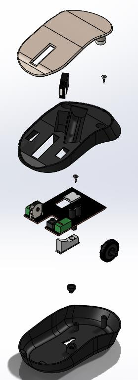
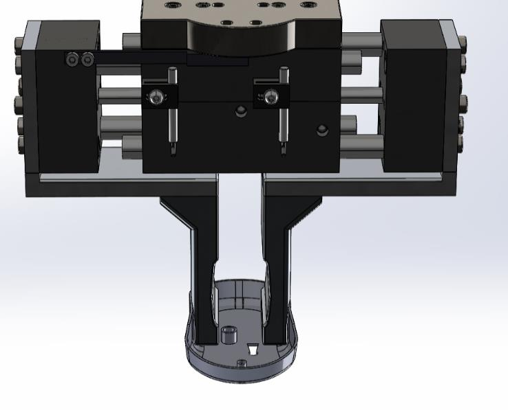
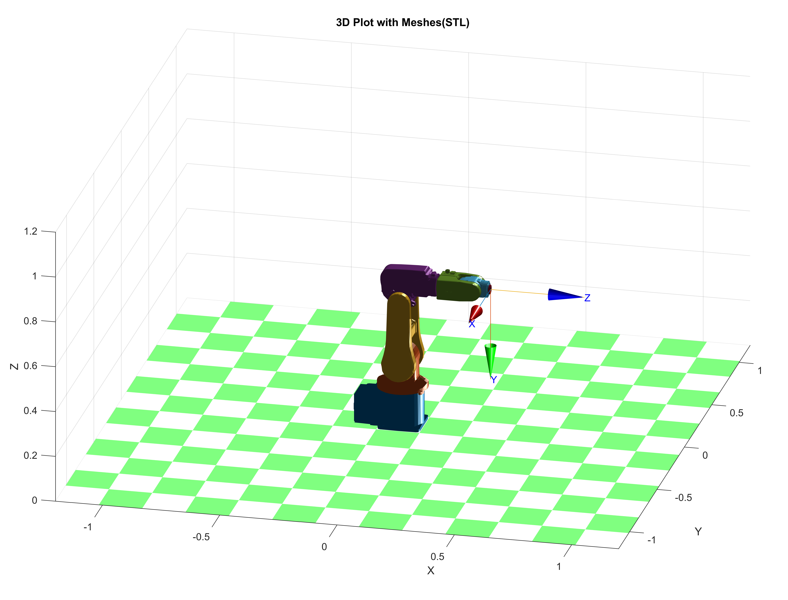

Robot System Design

Automated Assembly Project
This project involved the design and simulation of a robotic workcell for the automated assembly of a computer mouse. The system was designed in SolidWorks, and the robotic assembly process was simulated and controlled using MATLAB with the Robotics System Toolbox. The core of the workcell is a Universal Robots UR5 6-DOF robotic arm.
Redesign for Automation
The original mouse design was analyzed and redesigned to be more suitable for automated assembly. This involved reducing the number of parts from 10 to 7, and modifying components to simplify handling and assembly by a robot. For example, screws were replaced with clips and standoffs.


Feeder System
A bowl feeder system was designed to supply the mouse components in the correct orientation for the robot to pick them up. The feeder system included custom tracks and deflectors to ensure reliable feeding of the base shell, middle shell, top shell, sensor, scroll wheel, and USB dongle.


Gripper Design
A dual-gripper system was designed to handle the various components. It consisted of a parallel gripper for the larger, more robust parts like the mouse body, and a vacuum gripper for delicate components like the PCB and the top shell.


Robotic Cell Layout & Cycle Time
The robotic workcell was laid out to optimize the robot's movement and minimize the cycle time. The total cycle time for assembling one mouse was calculated to be approximately 32 seconds.
Robot Simulation ABB
This project focused on the simulation of an ABB IRB 120 robot performing a pick-and-place task in a constrained environment. The simulation was built using CoppeliaSim (formerly V-REP), and the robot was controlled using a Python script.
Simulation Environment
The environment was designed to mimic a realistic industrial setting. It included the ABB IRB 120 robot, a conveyor belt, two tables, and the objects to be manipulated. The goal was to pick a component from one table and place it on another, avoiding collisions with obstacles.

Python Control
The robot was controlled using a Python script that communicated with CoppeliaSim through its remote API. The script implemented the logic for the pick-and-place task, including inverse kinematics to calculate the required joint angles for the desired end-effector positions.
Results
The simulation successfully demonstrated the robot's ability to perform the pick-and-place task while avoiding collisions. The project highlighted the importance of accurate simulation in robotics for offline programming and validation of robotic applications.
Hand-Eye Coordination Project
This project involved developing a hand-eye coordination system for a robotic arm to detect and track objects using a camera. The system was implemented using an ABB IRB 120 robotic arm, a webcam, and MATLAB for image processing and robot control. The communication between MATLAB and the robot controller was established using a TCP/IP socket connection.
Camera Calibration
Camera calibration was performed to correct for lens distortion and to establish a relationship between the camera's pixel coordinates and the real-world coordinates. A checkerboard pattern was used for this process.
Image Processing
MATLAB's Image Processing Toolbox was used to analyze the video stream. The process involved several steps:
- Image undistortion using the parameters from camera calibration.
- Conversion to grayscale.
- Thresholding to create a binary image.
- Image masking to isolate the objects of interest.
- Region properties analysis to find the centroid, area, and orientation of each object.

Robot Control & Kinematics
The robot was controlled using RAPID, ABB's programming language. The coordinates of the detected objects were sent from MATLAB to the robot controller. The project also involved a detailed analysis of the robot's forward and inverse kinematics to accurately position the end-effector.


Project Information
- Category Robotics Mini-Projects
- Institution Swinburne University of Technology
- Course RME40003 - Robot System Design
- Duration 2023 (1 Semester)
- Technologies
- SolidWorks
- MATLAB
- CoppeliaSim
- Python
- ROS2 & Nav2 Stack
- Gazebo Simulation
- Qt Framework (GUI)
- C++ Programming
- SLAM & Navigation
- Status
- ✅ Completed